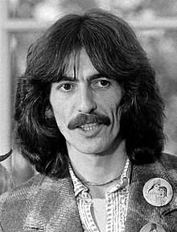

George Harrison

George Harrison MBE (25 februarie 1943 – 29 noiembrie 2001) a fost un muzician, cântăreț și compozitor englez care a devenit faimos la nivel internațional ca chitarist principal al trupei The Beatles. Numit uneori „The Quiet Beatle”, Harrison a îmbrățișat cultura indiană și a ajutat la extinderea domeniului muzicii populare prin încorporarea instrumentației indiene și a spiritualității hinduse în lucrările Beatles. Deși majoritatea pieselor formației au fost scrise de John Lennon și Paul McCartney, majoritatea albumelor Beatles din 1965 au conținut cel puțin două compoziții Harrison. Printre piesele sale se numără "Taxman", "Within You Without You", "While My Guitar Gently Weeps", "Here Comes the Sun" și "Something". Primele influențe muzicale ale lui Harrison au fost George Formby și Django Reinhardt. Influențele ulterioare au fost Carl Perkins, Chet Atkins și Chuck Berry.Până în 1965, el a început să conducă Beatles în folk rock prin interesul său față de Bob Dylan și Byrds, și față de muzica clasică indiană prin utilizarea instrumentelor indiene, cum ar fi sitarul, pe care l-a cunoscut pe platoul filmului "Help!" A cântat sitar pe numeroase melodii Beatles, începând cu "Norvegian Wood (This Bird Has Flown)". După ce a inițiat îmbrățișarea Meditației Transcendentale în 1967, a dezvoltat ulterior o asociere cu mișcarea Hare Krishna. După destrămarea trupei în 1970, Harrison a lansat triplul album All Things Must Pass, o lucrare apreciată de critici care a produs cel mai de succes hit single al său, "My Sweet Lord", și-a prezentat sunetul semnăturii ca artist solo, chitara de diapozitive. El a organizat, de asemenea, Concertul pentru Bangladesh din 1971 cu muzicianul indian Ravi Shankar, un precursor al concertelor de beneficii ulterioare, cum ar fi Live Aid. În rolul său de producător de muzică și film, Harrison a produs acte semnate la casa de discuri Apple a Beatles înainte de a fonda Dark Horse Records în 1974. El a co-fondat HandMade Films în 1978, inițial pentru a produce filmul de comedie al trupei Monty Python, The Life of Brian (1979).
Harrison a lansat mai multe single-uri și albume de succes ca interpret solo. În 1988, el a co-fondat supergrupul de platină Traveling Wilburys. Un artist prolific de înregistrare, el a fost prezentat ca chitarist invitat pe piese de Badfinger, Ronnie Wood, și Billy Preston, și a colaborat la cântece și muzică cu Dylan, Eric Clapton, Ringo Starr, și Tom Petty. Revista Rolling Stone l-a clasat pe locul 31 în lista lor din 2023 a celor mai mari chitariști din toate timpurile. El este de două ori Rock and Roll Hall of Fame inductee – ca membru al Beatles în 1988 și postum pentru cariera solo în 2004.
Prima căsătorie a lui Harrison cu modelul Pattie Boyd în 1966 s-a încheiat cu un divorț în 1977. În anul următor s-a căsătorit cu Olivia Arias, cu care a avut un fiu, Dhani. Fumător de țigări pe tot parcursul vieții, Harrison a murit de numeroase tipuri de cancer în 2001, la vârsta de 58 de ani, la doi ani după ce a supraviețuit unui atac cu cuțitul de către un intrus la casa lui, Friar Park. Rămășițele sale au fost incinerate, iar cenușa a fost împrăștiată conform tradiției hinduse într-o ceremonie privată în râurile Gange și Yamuna din India. El a lăsat o proprietate de aproape 100 de milioane de lire.